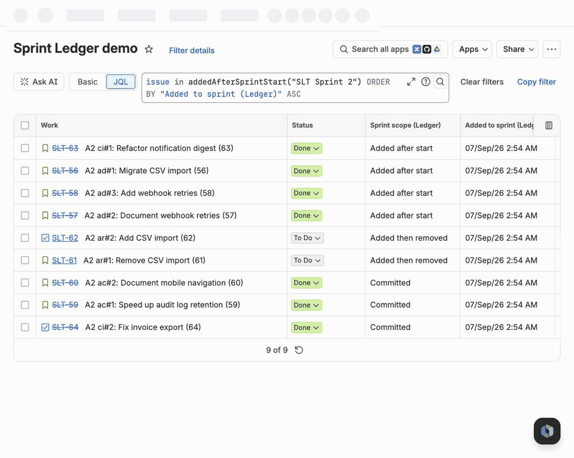

Sprint Ledger reconstructs the membership history of every sprint your site has ever run, keeps it current from Jira's own events, and gives you the answer as JQL functions and as issue fields you can put in a column. This page is everything a beta site needs: install, what the first few hours look like, the queries, and how to check the numbers against Jira's Sprint Report.
Your install link is in the invitation email. Open it while signed in to Jira, pick the site, review the permissions and install. It takes about a minute and needs a Jira administrator; there is nothing to configure afterwards.
Sprint Ledger is a Forge app: it runs inside Atlassian's infrastructure, and no issue data leaves your Jira. The consent screen asks to read Jira work, sprints, boards and projects, to write Jira work (used only to fill its own ten read-only fields) and to use Forge app storage.
Installing starts the reconstruction by itself. You do not need to pick projects: every project that has a scrum or team-managed board is tracked by default, and you can turn projects off on the admin page at any time.
The app reads the changelog of every issue that has ever been in a sprint and rebuilds, sprint by sprint, who was in it at the start, what arrived later, what left, what was finished and what rolled over.
Watch it at Jira settings → Apps → Sprint Ledger. The page shows a progress banner with an estimate (it appears once the run is about 5% in, because the first stages are dominated by scheduling), and a table of every board it has discovered with its sprint count and state, plus a Re-run button per board and Rebuild every tracked board. A board whose project does not use sprints, such as a team-managed Kanban board, is listed as no sprints and skipped.
If a reconstruction stops on an error, it starts again by itself after the next app update, which is how a fix reaches your site; there is nothing to press.
A project's own administrators do not need a Jira administrator for their project: Space settings (Project settings on some sites) → Apps → Sprint Ledger lists the project's boards and how far each board's history has been read, turns tracking on or off for that project, reads the history of any board that has not been read yet, and exports a board's sprints as CSV: one row per sprint with the gadget's numbers, or one sprint with one row per issue (its scope, when it was added or removed and by which account, its estimates, its status at the close and whether it was completed or carried over). The file is built in the browser with summaries read from Jira as the person exporting, so issues they cannot see are left out; it opens in Excel and Google Sheets with dates in UTC. Numbers come in the format your browser uses: 1.5 with commas between columns, or 1,5 with semicolons, which is what a spreadsheet in much of continental Europe expects; the section lets you pick the other one when the file is for someone else. On a site that tracks every project, only a Jira administrator can take a project out. The app does not follow a project while it is turned off, so turning it back on marks its boards as not read yet, and reading them again brings its values up to date.
A full reconstruction costs about two Jira API points per issue that has ever been in a sprint, and the app spends at most 12,000 points an hour so that it never crowds out your other apps or your own integrations. That works out at roughly 6,000 issues an hour.
| Issues that have ever been in a sprint | Expect |
|---|---|
| under 2,000 | a few minutes |
| 10,000 | about 2 hours |
| 30,000 | about 5 hours |
| 100,000 | about 17 hours |
It is safe to walk away. The run checkpoints itself after every batch, pauses when the hourly budget runs low, resumes on its own, and survives you closing the page. A rebuild is also safe to start at any time: the ledger is rewritten in place, never duplicated.
The fields and the JQL functions start answering when the run reaches its last stage, so treat the admin page saying the run has finished as the moment to start querying. From then on the ledger is kept current live: a drag into or out of a sprint shows up in the fields within a few seconds, a sprint start or completion within about five, and an hourly pass reconciles anything an event missed.
Both are one-time Jira configuration, and both are the usual reason a beta site thinks something is missing.
Jira shows a board to an app only when the app can see the board's filter. A board with a private filter is invisible, and its sprints will be missing from the ledger. If a board you expected is not in the admin page's table, open Filters → the board's filter → Details → Edit permissions, share it with the project (or with everyone logged in), and then press Rebuild every tracked board.
The fields work as columns and in JQL everywhere with no setup at all. They only need adding if you want to see them on the issue view:
The full reference is on the fields page. All ten are read-only and written only by the app, in bulk, without touching issue history. Six of them describe the issue's latest sprint, meaning the most recent started sprint the issue counts in, including one it was removed from.
| Field | Type | What it holds |
|---|---|---|
| Sprint scope (Ledger) | text | How the issue entered its latest sprint: Committed, Added after start, Removed, or Added then removed |
| Sprint added (Ledger) | date and time | When the issue entered its latest sprint |
| Sprint removed (Ledger) | date and time | When it left; empty unless it was removed |
| Sprint start (Ledger) | date and time | Start date of the latest sprint |
| Sprint planned end (Ledger) | date and time | Planned end date of the latest sprint |
| Sprint completed (Ledger) | date and time | Completion date of the latest sprint; empty while it runs |
| Sprint carried (Ledger) | number | How many closed sprints the issue left unfinished |
| Sprint original (Ledger) | text | Name of the first sprint the issue was ever in |
| Sprint membership (Ledger) | text list | The name of every sprint the issue has been in since that sprint started, whether it was completed, removed or carried over, oldest first. Future sprints are in Jira's own Sprint field |
| Sprint tags (Ledger) | text list | One token per sprint: c: committed, a: added after start, r: removed, d: completed, x: carried over, each followed by the sprint ID. This is what the JQL functions search; the newest 100 sprints are kept per issue |
They sort, they filter and they export like any other field:
"Sprint start (Ledger)" >= 2026-07-01 AND "Sprint scope (Ledger)" = "Added after start"
"Sprint membership (Ledger)" = "ACME Sprint 41"
project = ACME AND "Sprint carried (Ledger)" >= 3 ORDER BY "Sprint carried (Ledger)" DESC
"Sprint removed (Ledger)" >= -14dThe second one is what was in ACME Sprint 41 once it started, including the issues later removed or carried into the next sprint; Jira's own sprint = "ACME Sprint 41" is what is in it now.
The names were settled with the beta sites in September 2026. A filter or automation rule saved with an earlier name (Added to sprint, Removed from sprint, Original sprint, Sprints carried, Sprint end) shows "Field ... does not exist" until its query uses the new one; queries that use only the functions are not affected. In a team-managed project, a field added by an update is listed on the project's Fields page like the others, and its values are already there once you add it.
The full reference, with every message the JQL editor can show, is on the JQL functions page. Each one is used as issue in f(...) or issue not in f(...), and works wherever JQL works: filters, boards, dashboards, automation rules and filter subscriptions.
| Function | Returns |
|---|---|
addedAfterSprintStart(sprint?, board?) | Issues that joined the sprint after it started |
removedFromSprint(sprint?, board?) | Issues taken out after it started and before it closed |
committedTo(sprint?, board?) | Issues that were in the sprint the moment it started |
completedIn(sprint?, board?) | Issues in the sprint at completion whose status counted as done |
carriedOverFrom(sprint?, board?) | Issues in the sprint at completion that were not done |
carriedOver(n) | Issues that have rolled out of at least n closed sprints |
sprintsNamed(sprint, board?) | Issues in the sprints the argument names, now |
openSprintsNamed(sprint, board?) | The same, for those of the sprints that are active |
futureSprintsNamed(sprint, board?) | The same, for those of the sprints that have not started |
The sprint argument is a sprint name, a numeric sprint ID, or nothing at all, which means every active sprint on the site. A name matches every sprint with that name on any board, which is usually what you want across parallel boards; add the board name as a second argument to narrow it, or use the ID. Names ignore upper and lower case, as Jira's own sprint = "..." does. A name that matches nothing gives you a message in the JQL editor rather than a silent empty result.
A name may also contain *, which stands for any run of characters: "Plan: 25_1*" covers Plan: 25_10, Plan: 25_11 and Plan: 25_12. The * is the only wildcard; every other character, _ and ? included, means itself. A pattern covers the sprints of the projects Sprint Ledger is switched on for, a board name as the second argument narrows it to that board, and a pattern that matches more than 200 sprints asks you to narrow it rather than answering from part of the list. A saved filter with a pattern picks up a sprint created or renamed to match within seconds.
project = ACME AND issue in addedAfterSprintStart("ACME Sprint 42")
sprint in openSprints() AND issue in addedAfterSprintStart()
issue in committedTo("ACME Sprint 41") AND issue not in completedIn("ACME Sprint 41")
issue in removedFromSprint("ACME Sprint 41") AND issue not in committedTo("ACME Sprint 42")
issue in carriedOver(2) AND statusCategory != Done ORDER BY "Sprint carried (Ledger)" DESC
issue in addedAfterSprintStart("Sprint 7", "ACME board")
issue in carriedOverFrom("Dev: 25_1*") AND issue not in completedIn("Dev: 25_1*")The fourth one is the query people write to us about most: what was dropped from last sprint and never picked back up. The last one uses a pattern across a quarter's sprints: work that carried out of one of them and was not finished in any of them.
The first six functions answer from the sprint history the app keeps. The last three answer with Jira's own Sprint field, so they are about what is in the sprints now: their sprint argument is required and may be a name, a pattern or an ID, and the app turns it into Jira's sprint in (...) for you. The state is applied before Jira sees the list, which is what makes a dashboard of a team's active sprints exact: sprint in openSprints() next to a separate name condition would also show an issue that moved from a closed "Plan" sprint into an open "Dev" sprint, because Jira checks each condition against all of an issue's sprints. When none of the named sprints is in the state, between two sprints for example, the answer is empty rather than an error. Jira refuses a sprint it cannot show the person running the query, so if some of a pattern's sprints sit on boards not everyone can see, narrow the pattern or add the board name.
issue in openSprintsNamed("Dev: *") OR issue in futureSprintsNamed("Dev: *")
issue in sprintsNamed("Dev: 26_*") AND statusCategory != DoneThe first is a dashboard filter for the active and upcoming sprints of every board that names its sprints "Dev: YY_MM", with no list of sprints to keep up to date.

Add Sprint scope and say/do (Ledger) to any dashboard and choose a board, how many closed sprints to show (up to 24), whether to count issues or the board's estimate, and whether to include the active sprint. For each sprint it shows what was committed at the start, what was added after it, what was removed, what was completed and what carried over, with two ratios: say/do, which is completed divided by committed, and scope change, which is added plus removed, divided by committed. Below the table a stacked bar shows what became of each sprint's issues: completed, carried over or removed.
The gadget offers only the boards Sprint Ledger tracks that you can see, and shows a board's numbers only to people who can see that board. It reloads every 30 minutes, so it also works on a wallboard, and its numbers are the ones the Sprint Report comparison below checks. It reads best in a wide dashboard column; in a narrow one the table's headings wrap.
Everything the beta set out to deliver is now built: the reconstruction, the live capture, the hourly reconciliation, the ten fields and the nine functions; the dashboard gadget; the CSV export; the settings on the admin page (the definition of "done", whether subtasks count, how far back the deep scan reaches, whether account ids are stored, and the hourly API budget); and the project settings page. Updates arrive by themselves, with no action from you.
The definitions behind every number are on How Sprint Ledger counts. This is the one thing we would like every beta site to do, and it takes about fifteen minutes. Pick three closed sprints, ideally ones you remember, and compare.
issue in committedTo("ACME Sprint 41")
issue in addedAfterSprintStart("ACME Sprint 41")
issue in removedFromSprint("ACME Sprint 41")
issue in completedIn("ACME Sprint 41")
issue in carriedOverFrom("ACME Sprint 41")Three differences are expected and are not bugs:
| You will see | Why |
|---|---|
| Subtasks are missing from both | Jira's report excludes them and so do we, by default. The ledger still tracks them, and the admin page's subtask setting counts them. |
An issue that was added after the start and then removed again appears in both addedAfterSprintStart and removedFromSprint, while Jira's report lists it only under "Issues Removed From Sprint" | Both statements are true, and reporting on scope change needs both. Jira shows each issue once, in one list. |
| An old sprint disagrees about what counts as completed | "Completed" means the issue's status was in the board's rightmost column. If the board's columns were rearranged since that sprint closed, the current mapping is used. The admin page can define done by status category instead. |
An issue that was committed, removed and then put back counts as committed, exactly as Jira's report treats it. Anything else that differs is a bug and we want to hear about it: the sprint, the issue key and what each side said is enough.
The full privacy policy is on this site; in short:
Sprint Ledger stores issue IDs and keys, project IDs, sprint and board metadata, timestamps, the account ID of whoever added or removed an issue, and the values it computes. It does not store summaries, descriptions, comments or attachments. Nothing is sent anywhere: there are no external services and no egress, because the app runs on Atlassian's own infrastructure and its data lives in Forge storage attached to your installation, which also means it inherits your site's data residency.
Account IDs are captured so that an export can say who changed the scope. On the admin page, Store account ids turns that off and Anonymise user ids removes the ones already stored. Delete all ledger data empties the ledger without uninstalling. Uninstalling makes the app's fields disappear from Jira at once, and Atlassian deletes the data that belonged to the installation after a retention period of about a month, as the privacy policy describes.
The beta is free. When the app is listed, beta sites keep it free for 60 days from the listing date, and sites with up to 10 users stay free after that.
The support page has the details. Reply to the invitation email, or write to damyor+sprintledger@gmail.com. During the beta you get an answer the same day, from the person who writes the app. Backfill stuck, a number that looks wrong, a field name that reads badly, a query you expected to work: all of it is useful, and the naming in particular is still open.